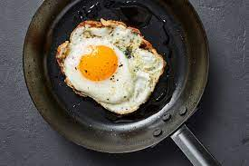

Fried Egg

"That is an egg that has been fried."
Ingredients:
- 1 Egg
- 1 Tbsp Salted Butter
- Salt and Pepper to taste
Steps:
- Melt butter in pan on medium heat
- Crack egg into pan
- Add salt and pepper
- Cover for and cook for 3 minutes
- Remove and enjoy your Fried Egg